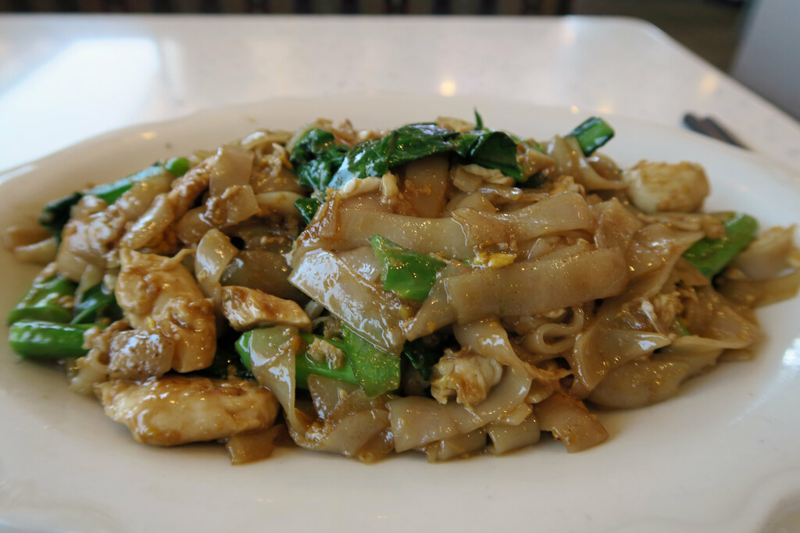

Pad See Ew

This dish is also known as "Thai Stir-Fried Noodles."
Ingredients:
- 6 oz rice vermicelli
- 2 tbsp oyster sauce
- 2 tbsp water
- 2 tbsp dark soy sauce
- 2 tsp soy sauce
- 2 tsp distilled white vinegar
- 2 tsp white sugar
- 2 tbsp vegetable oil
- 2 cloves garlic
- 5 oz boneless chicken thigh
- 1 cup small broccoli florets
- 1 large egg
Directions:
- Place rice noodles in a large bowl and cover with boiling water.
Soak for 4
to 8 minutes until tender.
Rinse thoroughly and leave in a colander to drain.
- Combine oyster sauce, water, dark and regular soy sauce, vinegar,
and sugar in a
small bowl.
- Place a wok over high heat; add oil and mince garlic into the wok.
Heat for ~1 minute until oil is hot and garlic starts to turn golden.
Add chicken and broccoli; stir-fry for 1 minute then move to the side.
Crack egg into the skillet and scramble for ~1 minute.
- Add noodles and sauce; fold gently to combine until sauce caramelizes,
evenly coats the noodles, and cooks the chicken, 1 to 2 minutes.
Recipe Source
Back to Home